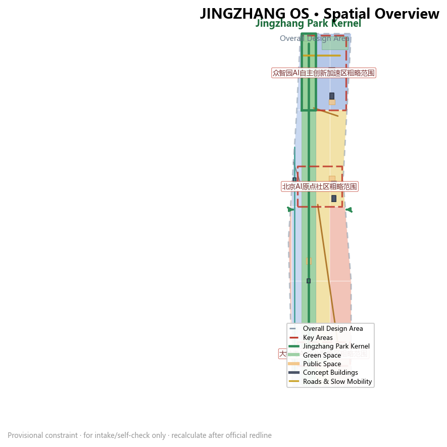
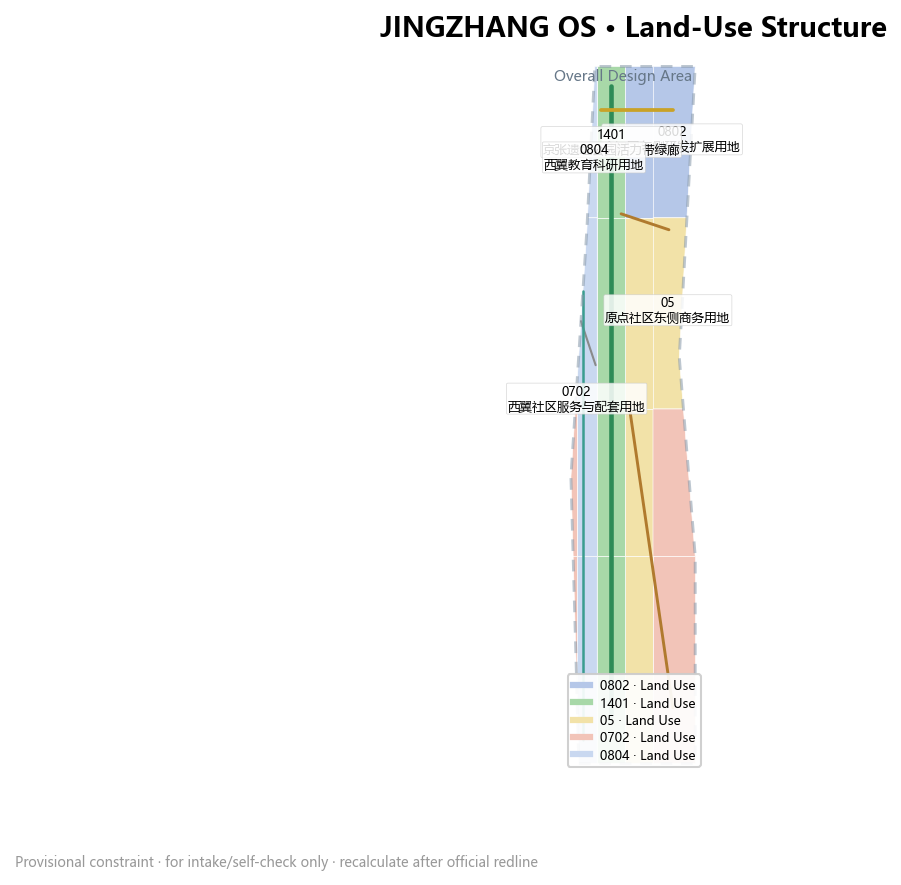
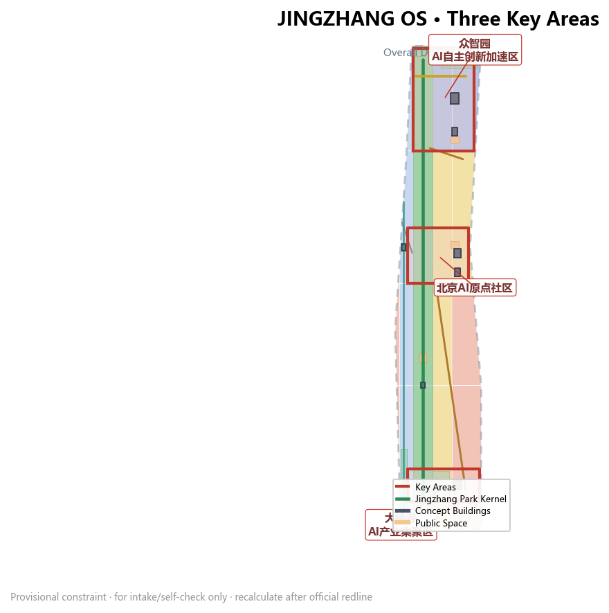
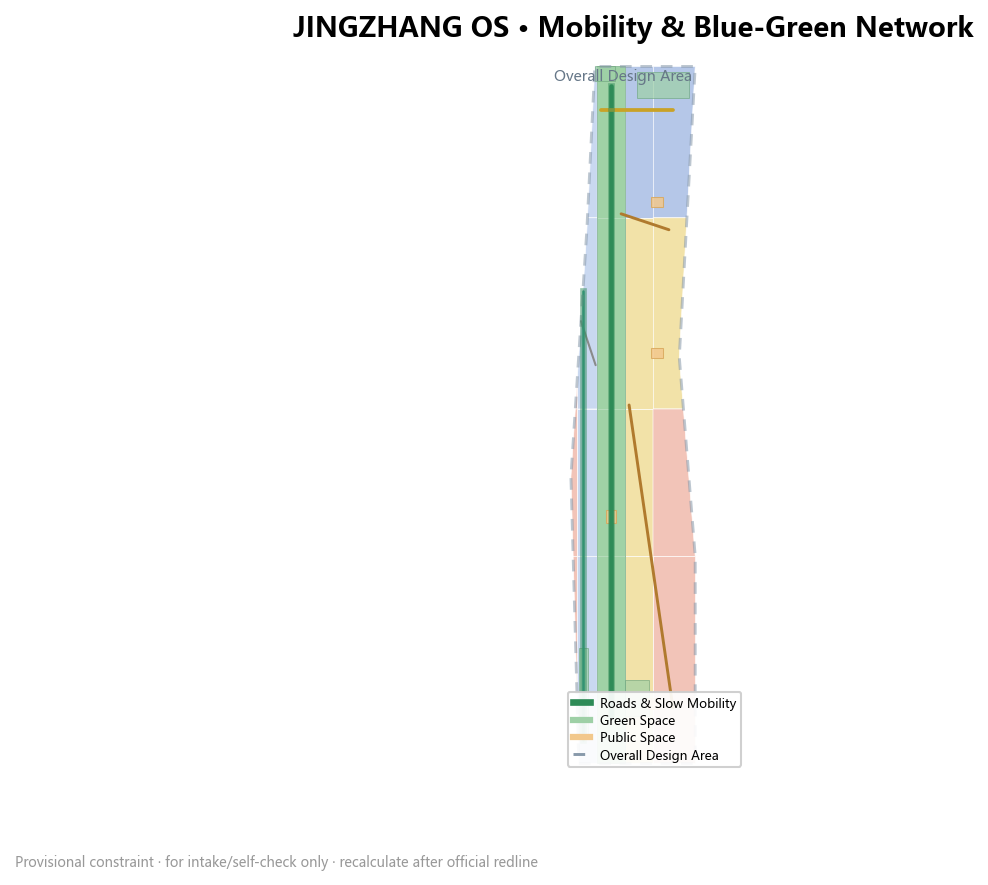
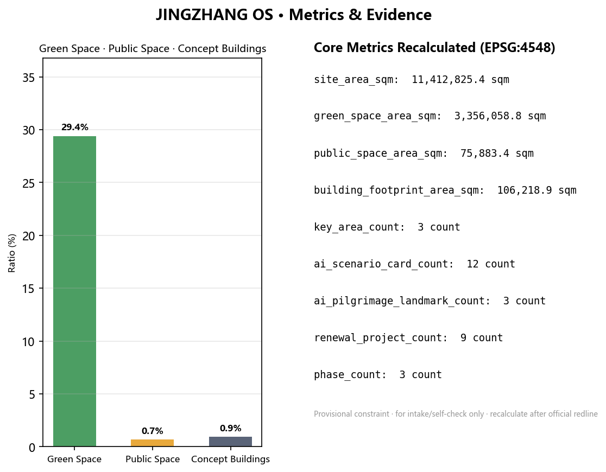

京张OS：把百年铁轨编译为城市内核——百年京张AI创新带城市设计方案
以「京张OS」为总体概念，把百年京张铁路遗址编译为一座可安装、可回退、可长期演进的城市级AI操作系统：内核为遗址公园9公里公共脊线，三区两翼构成核心进程与总线，12张AI场景卡、3处朝圣地标与分期版本化运营共同落实三大定位。
京张OS：把百年铁轨编译为城市内核——百年京张AI创新带城市设计方案
设计依据与资料清单
本方案以北京市规划和自然资源委员会海淀分局《百年京张AI创新带城市设计国际方案征集资格预审公告》为第一权威依据，该公告确定了项目名称、主办信息、三层范围、三处重点区域、公告约面积和设计任务深度 来源。公告明确统筹研究范围约43.6平方公里、总体设计范围约11.4平方公里、重点区域范围合计约368.4公顷，其中众智园AI自主创新加速区约192.1公顷、北京AI原点社区约104.3公顷、大钟寺AI产业聚集区约72.0公顷；方案达到控制性详细规划的城市设计深度与规划综合实施方案的城市设计深度 标准。
面向智能体的开源征集任务书由用户提供并清权，提出三大定位、五大功能、三区两翼、六项智能体任务（agent.1至agent.6）、十条共创原则和统一边界条款 来源。本方案把任务书作为概念创意、场景设计、品牌运营和合规表述的主控依据，并把所有空间落地建议表述为「概念建议/参考方案/可供专业团队深化研究」，不构成法定规划结论 标准。
机器可读依据来自 brief/site-package/ 的项目简报、允许设计空间、枚举、规划指标区间和Schema 来源。资料用途边界按 data/source_registry.json 区分：公告与任务书属于 formal 可用资料，临时边界属于 provisional-only 资料，不可升级为官方红线 来源。data/processed/agent_fact_pack.md 仅作为导航层帮助组织任务与缺资料清单，不新增权威来源 来源。
由于官方精确 polygon 尚未公开，本方案使用仓库维护者基于公告文字四至推定的临时边界，作为生成、展示和自检的占位约束 来源。总体设计范围临时边界面积在 EPSG:4548 下复算为约1141.28公顷 指标，三处重点区域使用临时 polygon 来源 空间数据。所有空间与指标结论都受「边界为临时、官方红线发布后整包重算」这一假设约束 [assumption:A-BOUNDARY-001]，缺失的控规条件列为待确认事项 [assumption:A-CONTROLS-001]。
专业标准方面，本方案回应用地分类指南的可校验用地代码 标准、城市设计管理办法的风貌与公共空间统筹要求 标准，并依据控规编制审批办法区分已知控制条件、设计建议和待确认事项 标准。建筑深度规定尚未取得官方文件，仅作为深化提醒登记 标准。

三层范围工作框架
方案按公告确定的三层范围组织「内核编译」工作框架 深度。统筹研究范围聚焦43.6平方公里的产业生态、创新链、人才和未来城市形态；总体设计范围聚焦11.4平方公里京张遗址公园周边1-2公里城市地区和产业区，形成城市更新总体框架、用地、交通、市政和风貌控制；重点区域范围聚焦三处片区达到详细设计深度 深度。三层不是割裂的图纸集合，而是「内核—系统—模块」的递进：统筹层决定操作系统要解决什么问题，总体层决定内核与总线的布局，重点区决定可安装、可测试、可运营的模块与接口 空间数据。
三层工作与指标、图层、图纸、HTML和合规矩阵一一对应。统筹研究的判断落到 compliance_matrix.json 和 standard_matrix.json；总体设计的空间结构落到 geometry/land_use.geojson、geometry/buildings.geojson、geometry/roads.geojson、geometry/green_space.geojson、geometry/public_space.geojson 与 geometry/phasing.geojson；重点区域落到 geometry/key_areas.geojson 的三个 feature 空间数据 空间数据 空间数据。全部面积指标以 EPSG:4548 复算 指标。
临时边界的使用边界在本方案中全程披露：临时约束范围（provisional constraint）只用于AI生成、离线可视化、intake自检和非法定设计讨论；不得作为官方红线、审批依据、精确面积依据或法定控制结论 空间数据。官方 polygon 发布后，site boundary、key areas、land use、roads、green space、public space、buildings、phasing 及全部指标必须重新计算 [assumption:A-BOUNDARY-001]。
| 层级 | 设计问题 | 方案回答 | 数据落点 |
|---|---|---|---|
| 统筹研究范围 | 世界级AI创新生态与未来城市形态 | 三区两翼协同回路、五大功能、创新链 | compliance_matrix.json、standard_matrix.json |
| 总体设计范围 | 城市更新与控规深度城市设计 | 内核+总线+模块空间结构、用地与分期 | 空间数据、空间数据 |
| 重点区域范围 | 三处片区详细设计 | 训练区、开源区、部署区三大模块 | 空间数据 |

统筹研究范围产业与未来城市研究
统筹研究回答一个问题：如何让43.6平方公里成为一座可学习、可进化、可长期演进的城市级AI操作系统。方案提出「京张OS（JINGZHANG OS）」总体概念，把百年京张铁路遗址「编译」为城市公共内核——铁路是二十世纪初中国自主建造的第一条干线铁路，它曾经把城市切开，今天要把它重新缝合为一条贯穿南北的公共创新总线 来源。主名称「京张OS」、英文名称「JINGZHANG OS」与命名体系遵循「内核—总线—模块—接口」的系统语言：三处重点区分别命名为「训练区·众智园」「开源区·AI原点」「部署区·大钟寺」，两翼命名为「中关村科技服务总线」与「小月河场景总线」；视觉识别方向以铁路轨道+电路板的双重视觉母题，Logo 建议为一条「编译后的铁轨」符号，色板采用信号绿、轨道灰与开源黄三色，可延展为导视、数字界面与公共艺术 标准。
三大定位落到本方案的三个功能层：百年京张文化带对应内核层的遗产叙事与公共空间，都市AI生活体验带对应总线层的场景卡与公共体验路线，AI融合创新带对应模块层的产业空间与测试验证 深度。五大功能——AI全栈自主创新体系、世界级AI创新生态、AI+场景赋能新范式、智能化AI活力城市、AI治理全球话语权——分别由众智园、AI原点社区、小月河场景翼、公共空间系统和中关村服务翼承接。三区两翼协同回路是：众智园产出可信模型与标准，经中关村总线获得资本、数据与IP服务，在AI原点开源发布并由小月河场景翼开放测试，最后在大钟寺部署为可消费的应用与新业态，形成「训练—开源—测试—部署」的闭环 来源。
全球AI创新生态案例研究选取6个对标对象：硅谷Sand Hill Road的资本密度与耐心资本、伦敦King's Cross知识三角的站城一体与大学溢出、波士顿Kendall Square的产学研双轮、新加坡One-North的花园园区与场景开放、东京虎之门之丘的轨道枢纽垂直混合、深圳南山科技园的产品迭代与产城融合 指标。从案例提炼四条可迁移机制：大学与园区的慢行缝合、可预约的产业测试空间、开源社区作为公共基础设施、轨道站点作为创新客厅。这些机制被转译为京张OS的接口设计，落到三处重点区和两翼的运营机制中 深度。
未来城市形态研究提出「城市级AI操作系统」的五层结构：内核层是遗址公园公共脊线，系统层是数据、算力与能源底座，应用层是可安装可回退的AI场景，界面层是面向市民的公共体验，治理层是可审计的人机共治机制 深度。这五层与国土空间规划创新思路衔接：把「综合规划、空间产业融合、规划创新」落实为可定位的功能区、节点、廊道和场景，而非口号式愿景 标准。
总体设计范围城市更新与控规深度城市设计
总体设计范围以「内核+总线+模块」组织空间，达到控制性详细规划的城市设计深度 深度。用地分区完整覆盖提交边界、无重叠、无缺口，共生成19个用地多边形，包含科研用地（0802）、商业服务业用地（05）、公园绿地（1401）、教育用地（0804）与社区服务用地（0702）等可校验用地代码 空间数据 标准。建筑基底面积复算约10.6公顷 指标，建筑密度约0.93% 指标，反映低密度、花园化、可测试的城市形态；绿地率约29.4% 指标，公共空间率约0.66% 指标，绿地高而公共空间偏低，说明需要在建筑首层与站前界面补充可进入的公共活动空间 深度。
城市更新总体框架采用「编译式更新」：保留可用的现状资产（铁路设施、高校与既有社区），改造转换功能不适配的空间（工业转研发、商业转公共），新建缺失的模块（测试场、开源客厅、站城综合体），并全部列为概念建议，待权属、控规与工程条件确认后由专业团队深化 深度。开发强度、建筑高度、退线、道路红线等法定控制指标在公开资料中缺失，本方案不编造审定值，统一列为「待正式控规条件确认」[assumption:A-CONTROLS-001]。
建筑高度、体量与风貌控制遵循「从遗址向城市递升」的原则：遗址公园内核两侧设置过渡带，众智园以花园式低层研发为主，AI原点社区以中低层学术街区为主，大钟寺结合轨道站点适度提升强度形成站城地标 深度。所有高度与体量建议均需官方控规与视线分析复核，本方案只给出方向性层级。风貌基调融合铁路红砖、轨道灰与开源信号黄，屋顶鼓励光伏与生态种植，禁止未经论证的巨型屏幕 标准。
更新项目与功能比例由 geometry/buildings.geojson 的7个概念建筑基底、geometry/phasing.geojson 的三期范围和 compliance_matrix.json 的任务覆盖共同支撑 空间数据 空间数据。建筑基底与产业空间供给、人才服务、公共空间的关系在「用地、建筑规模与拆改留方案」章节展开 指标。
重点区域详细设计
三处重点区域对应京张OS的三个核心模块，分别达到规划综合实施方案的城市设计深度 深度。
训练区·众智园AI自主创新加速区
本区约192.1公顷（临时边界复算）空间数据，定位为「AI全栈自主创新训练区」，承担模型训练、安全评测、标准制定与产业展示。空间上以「测试院落+清河界面」组织：中部设置开放测试实验室（BLDG-002）与全栈研发中心（BLDG-001），公共测试广场（PUBLIC-001）面向公众预约参观；临清河一侧布局防护绿廊（GREEN-002），把低碳算力与生态体验结合 空间数据 空间数据。产业测试场景包括大模型训练集群展示、AI安全红队攻防演练与芯片仿真测试场（见场景卡）指标。实施风险：测试设施涉及算力、能源与安全边界，须由专业团队与监管主体确认后深化 [assumption:A-CONTROLS-001]。
开源区·北京AI原点社区
本区约104.3公顷（临时边界复算）空间数据，定位为「近校成果转化与开源发布社区」，把高校源头创新与开源社区作为公共基础设施。空间上以「开源客厅+学术走廊」组织：开源孵化器（BLDG-003）与成果转化办公楼（BLDG-004）布置在近校一侧，开源发布广场（PUBLIC-002）承担模型发布、开发者大会与贡献荣誉展示；教育科研用地与西翼教育用地（0804）通过校园—园区慢行缝合 空间数据 空间数据。本区是「AI治理全球话语权」与「开源体系」的主要载体，荣誉展示与贡献墙构成公共记忆系统。实施风险：校区边界、权属与首层业态需校方与产权方确认 [assumption:A-OWNERSHIP-001]。
部署区·大钟寺AI产业聚集区
本区约72.0公顷（临时边界复算）空间数据，定位为「智能原生新业态部署区」，把智能体、智能终端、内容消费与数据要素转化为可消费的城市场景。空间上以「站城客厅+四象限连通」组织：大钟寺智能原生商业综合体（BLDG-005）与站前绿地（GREEN-005）结合，国际路演广场（PUBLIC-003）面向全球企业，把「出站即到客厅」的轨道一体化作为设计目标 空间数据 空间数据。交通组织建议围绕大钟寺站打通地面四象限步行连通，具体线位与工程可行性须由轨道与市政专项确认 深度。实施风险：站城一体化涉及权属、轨道与市政条件，属于待深化事项 [assumption:A-CONTROLS-001]。

AI 创新生态、人才画像与 AI+ 场景
本方案构建12张AI场景卡（指标），其中3张为产业测试验证场景；构建5类用户画像；提出3处AI朝圣地标（指标）。每个场景均说明空间位置、服务对象、数据来源、隐私边界、人工复核与运营主体 深度。
用户画像（5类）：AI研究者（众智园，需要安静实验室与可信评测）、开源开发者（AI原点，需要发布厅与协作空间）、初创团队（众智园+中关村翼，需要算力入口与资本对接）、周边居民（遗址公园沿线，需要慢行与生活服务）、全球访客与投资者（大钟寺，需要展示、路演与国际接待）来源。每类画像对应到具体空间模块、图层与指标。
12张场景卡（含3张测试验证场景）： 1. 大模型训练公开测试（测试验证，众智园，空间数据） 2. AI安全红队演练场（测试验证，众智园PUBLIC-001，人工复核） 3. 智能终端实测走廊（测试验证，大钟寺BLDG-005） 4. 开源模型发布厅（AI原点PUBLIC-002） 5. 贡献荣誉墙与开发者驿站（AI原点） 6. AI慢行导航与无障碍提示（遗址公园内核，空间数据） 7. 端侧算力驿站（三区多点，空间数据） 8. AI健康服务导航（社区医疗点，隐私分级） 9. AI教育体验亭（西翼教育用地，空间数据） 10. 企业服务Copilot（中关村总线，空间数据） 11. 数据要素会客厅（大钟寺，合规授权前置） 12. 全球AI活动周公共路线（一带公共空间，空间数据）
AI治理边界遵循数据最小化、公开来源、可解释与人工复核原则：所有场景不采集个人行为轨迹，活动数据只做聚合统计，涉及个人数据或企业数据须另行授权 来源。智能体可以辅助识别慢行断点、公共空间热力、设施维护与活动安全，但不能替代规划审批，不能输出未经授权的个人画像，不能声称获得官方实施承诺 深度。
用地、建筑规模与拆改留方案
用地分类依据国土空间用地用海分类指南的可校验代码表达 标准，19个用地多边形无缝覆盖提交边界 空间数据。功能比例以研发（0802）与商业服务业（05）为主，绿地（1401）作为内核贯穿南北，教育与社区用地支撑人才生活。建筑基底复算约10.6公顷 指标，建筑密度约0.93% 指标，总建筑面积、容积率、建筑高度等指标因缺少官方控规条件列为待确认 [assumption:A-CONTROLS-001]。
拆改留方案采用概念性分类：保留京张铁路遗址与质量良好的既有设施，改造转换功能不适配的空间，新建测试场、开源客厅与站城综合体等缺失模块 深度。7个概念建筑基底（BLDG-001至BLDG-007）分别承载研发、测试、孵化、办公、商业、文化与教育功能 空间数据。所有拆改留判断不涉及具体地块权属结论，须在现状测绘与产权确认后由专业团队深化 [assumption:A-OWNERSHIP-001]。
交通、轨道、市政与公共服务设施
交通策略以「轨道+慢行双优先」组织，内核绿道（ROAD-001）、滨水骑行道（ROAD-006）与次级联络路（ROAD-003/004）构成慢行骨架 空间数据，道路中心线总长约以几何复算为准 指标。轨道一体化围绕五道口、清华东路西口与大钟寺站展开，建议三处重点区实现「出站即到客厅」，具体接驳通道与线位须轨道专项确认 深度。对外交通依托北五环与京藏高速，跨环路节点是慢行缝合的重点，工程可行性待交通专项评估 [assumption:A-CONTROLS-001]。
市政与新型基础设施按「分布式+端侧」策略组织：分布式能源、端侧算力与公共建筑复合布局，海绵城市与蓝绿系统协同，综合管廊预留AI设施管位 深度。公共服务设施按5类用户画像配置，覆盖产业服务、人才生活、教育医疗与国际交往；管线、消防、防洪等工程条件缺失，统一列为正式深化前置条件 [assumption:A-CONTROLS-001]。

蓝绿空间、公共空间与城市风貌
蓝绿空间以京张遗址公园活力带为内核，贯通南北、缝合东西 深度。绿地系统由遗址内核绿廊（GREEN-001）、清河防护绿廊（GREEN-002）、小月河滨水公园（GREEN-003）、五环南侧防护绿地（GREEN-004）与大钟寺站前绿地（GREEN-005）构成，复算绿地率约29.4% 指标。公共空间由众智园测试广场（PUBLIC-001）、开源发布广场（PUBLIC-002）、国际路演广场（PUBLIC-003）与遗址中央活动带（PUBLIC-004）组成 空间数据，复算公共空间率约0.66% 指标，后续应在建筑首层与站前补充可进入公共空间。
城市风貌融合百年京张铁路文化、中关村创新文化与AI新文化三重叙事：以「编译后的铁轨」为视觉母题，设置导视、标识、公共艺术与国际传播文案 来源。3处AI朝圣地标（指标）：「内核起点」——清华园车站旧址前的模型发布节点；「开源之核」——AI原点开源发布广场的贡献荣誉装置；「部署之门」——大钟寺站城客厅的数字新业态橱窗。地标、字体、图像、肖像与企业标识均须清权，本方案只给出概念方向，不表述为已批准建设 深度 标准。
更新项目清单、实施政策与分期计划
更新项目清单共9项（指标），按「内核—总线—模块」分组：内核项目包括遗址慢行断点缝合、内核数字底座与荣誉墙；模块项目包括众智园测试院落、AI原点开源客厅、大钟寺站城客厅；总线项目包括中关村科技服务驿站、小月河场景开放廊与全球活动周公共路线 深度。每个项目标注类型、空间位置、依赖条件与建议时序，实施主体、投资与审批路径列为风险事项 空间数据。
分期采用「版本迭代」逻辑 深度：一期（v1.0）以内核慢行与数字底座为主，打通遗址公园断点并部署低风险场景；二期（v2.0）推进两翼产业与场景更新，开放测试与开源发布；三期（v3.0）完成南翼大钟寺站城一体与国际交往运营。分期面积由 geometry/phasing.geojson 复算 指标。
全球AI创新活动体系与长期运营设计：建议建立年度「京张OS开发者大会」、季度场景开放日、月度开源发布周，形成「测试—发布—路演—部署」的运营闭环 来源。开发者社区按开源仓库逻辑运营，贡献荣誉进入永久纪念体系；所有活动、招商、资金、政策与运营安排均表述为概念建议，不构成已确定的政府安排 深度。
指标体系、面积复算与合规矩阵
指标体系分三类：可直接复算的空间指标、待官方控规确认的管控指标、需运营数据校准的绩效指标 深度。空间指标全部由 geometry/*.geojson 在 EPSG:4548 下复算。总体设计范围面积约1141.28公顷 指标，建筑基底约10.6公顷 指标，建筑密度约0.93% 指标。
蓝绿与公共空间指标支撑人才生活与创新交往：绿地率约29.4% 指标，公共空间率约0.66% 指标，说明需要在建筑首层与站前补充可进入公共空间。重点区域3处 指标，更新项目9项 指标，场景卡12张 指标，朝圣地标3处 指标，分期3期 指标。容积率等管控指标因官方控规缺失列为 unknown [assumption:A-CONTROLS-001]。
面积复算说明：所有数值基于临时边界，官方红线发布后必须整包重算 [assumption:A-BOUNDARY-001]。合规矩阵覆盖公告1.3、1.4、1.5各条款与agent.1至agent.6全部任务 深度，每条任务对应章节、图层、指标、图纸、HTML、来源、假设与自检项。专业标准矩阵覆盖5项mandatory标准，设计深度矩阵覆盖15项required深度项，二者与正文证据引用形成完整证据链 深度。

风险、版权与合规说明
本方案为AI生成的城市设计方案，作者对事实、来源、版权、空间数据、指标与表达负责 深度。主要风险与缺资料：官方边界缺失（临时边界仅用于intake与讨论）[assumption:A-BOUNDARY-001]、控规条件缺失（开发强度待确认）[assumption:A-CONTROLS-001]、权属与现状测绘缺失（拆改留为方法论建议）[assumption:A-OWNERSHIP-001]、市政与工程条件缺失（设施方案为概念框架）[assumption:A-CONTROLS-001]。所有空间落地建议表述为「概念建议/参考方案/可供专业团队深化研究」，不替代正式规划，不构成政府审定结论 来源。
版权与合规：全部文本、几何、图纸、PDF与静态HTML由声明的AI agent（shundebo，deepseek-v4-flash）基于公开或清权资料生成；数据来源登记于 sources.json，版权声明见 report/copyright_statement.md。HTML为完全离线静态页面，无CDN、远程脚本、远程字体或API请求。本方案不包含个人信息、虚假审批声明或不可执行承诺。组织方数据缺口不阻断内容评分，但precision敏感指标须在官方polygon发布后重新计算 标准。
参考资料
1. 北京市规划和自然资源委员会海淀分局《百年京张AI创新带城市设计国际方案征集资格预审公告》来源 2. 《面向全球智能体开展百年京张AI创新带城市设计开源征集》任务书摘录（用户提供清权文档）来源 3. 项目资料包 brief/site-package/ 来源 4. 公开资料用途注册表 data/source_registry.json 来源 5. 临时边界与重点区域临时polygon 来源 来源 6. 自然资源部《国土空间调查、规划、用途管制用地用海分类指南》标准 7. 住建部《城市设计管理办法》标准 8. 住建部《城市、镇控制性详细规划编制审批办法》标准 9. 建筑深度规定（待取得官方文件后启用）标准 10. 全球AI创新生态案例：Sand Hill Road、King's Cross、Kendall Square、One-North、Toranomon Hills、深圳南山科技园 指标